Модуль для просмотра и редактирования документов онлайн с использованием сервера OnlyOffice позволяет работать с документами в интерфейсе ELMA365 в поставках SaaS и On‑Premises версии 2023.10 и выше.
Особенности установки сервера OnlyOffice
Для работы требуется установленный сервер ONLYOFFICE Docs, который можно загрузить с официального сайта. Вы можете использовать бесплатную OpenSource версию, но она имеет ограничение на 20 одновременно открытых сеансов редактирования (просмотр без редактирования не ограничен).
Загрузите бесплатную версию и ознакомьтесь с инструкциями по установке OnlyOffice на официальном сайте. Обратите внимание, инструкции по установке отличаются в зависимости от варианта поставки.
начало внимание
Для корректной работы модуля интеграции рекомендуем устанавливать OnlyOffice версии 8.1 и выше.
конец внимание
Изменение порта по умолчанию
При установке OnlyOffice на один физический сервер с ELMA365 обязательно смените порт по умолчанию для сервера OnlyOffice на другой, например 8080.
Чтобы сменить порт, выполните установку сервера OnlyOffice с параметром /DS_PORT командой:
onlyoffice-documentserver-ee.exe /DS_PORT=<PORT_NUMBER>
Где onlyoffice-documentserver-ee.exe — имя исполняемого файла дистрибутива сервера ONLYOFFICE Docs, а <PORT_NUMBER> — номер порта, который вы хотите использовать для OnlyOffice.
Чтобы проверить готовность сервера работать с документами, перейдите по ссылке https://<ваш_адрес_сервера_onlyoffice>/web-apps/apps/api/documents/api.js. Откроется страница с кодом javascript.
Обратите внимание, сервер OnlyOffice должен быть настроен на работу по HTTPS и доступен в сети как пользователям, так и серверу ELMA365.
Также для корректной работы модуля на сервере OnlyOffice необходимо использовать SSL‑сертификат, выданный доверенным удостоверяющим центром. При использовании самоподписанного SSL‑сертификата в работе модуля могут возникать ошибки. Например, без дополнительных настроек на стороне браузера или приложения просмотр документов будет недоступен.
Настройка поддержки JWT
В ELMA365 поддерживается работа с JWT‑токенами, которые используются для обеспечения дополнительного уровня безопасности при аутентификации. Начиная с версии ONLYOFFICE Docs 7.2 валидация JWT включена по умолчанию. Для более ранних версий её необходимо включить.
Включение валидации JWT-токенов на стороне OnlyOffice
"inbox": {
Если OnlyOffice установлен в Docker-контейнер, для перезапуска используйте команду: systemctl restart ds-converter ds-docservice ds-example ds-metrics В случае установки напрямую на сервер используйте команду: supervisorctl restart all После этого необходимо указать секретный ключ при настройке модуля в ELMA365. |
Если вы не используете JWT, для корректной работы модуля отключите проверку токенов в настройках OnlyOffice.
Отключение валидации JWT-токенов на стороне OnlyOffice
Если OnlyOffice установлен в Docker-контейнер, для перезапуска используйте команду: systemctl restart ds-converter ds-docservice ds-example ds-metrics В случае установки напрямую на сервер используйте команду: supervisorctl restart all |
Установка модуля OnlyOffice в системе ELMA365
Модуль можно загрузить из каталога ELMA365 Store или в виде файла формата .e365.
Для установки модуля выполните следующие действия:
- В ELMA365 перейдите в раздел Администрирование > Модули и нажмите кнопку + Модуль в правом верхнем углу.
- В открывшемся окне перейдите в каталог ELMA365 Store или выберите ссылку Загрузить файл и добавьте файл формата .e365.
- Дождитесь окончания проверки и установки. Затем нажмите кнопку Перейти в модуль.
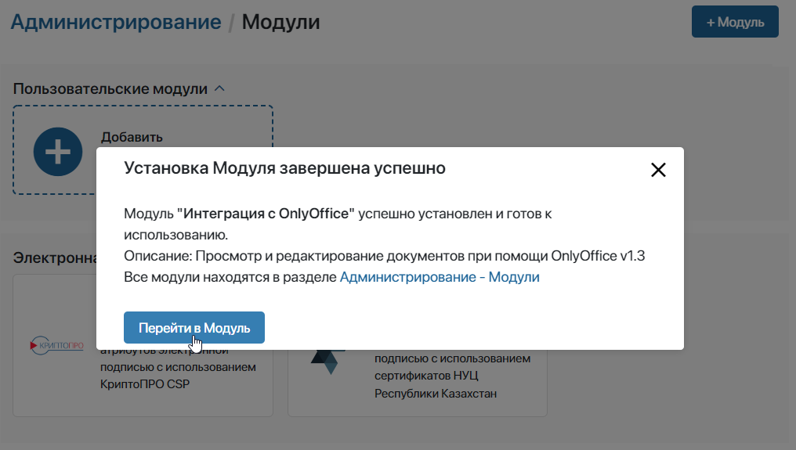
Настройка модуля
На открывшейся странице заполните основные поля:
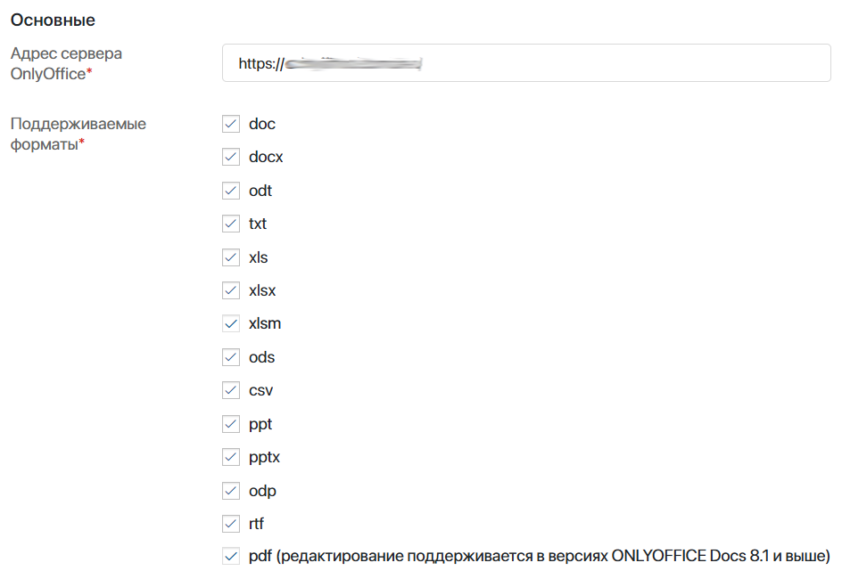
- Адрес сервера OnlyOffice* — адрес до OnlyOffice в формате
https://name.domain.ru/; - Поддерживаемые форматы* — отметьте форматы файлов, с которыми вы хотите работать в OnlyOffice. Можно отметить сразу все опции.
Затем перейдите к дополнительным настройкам:
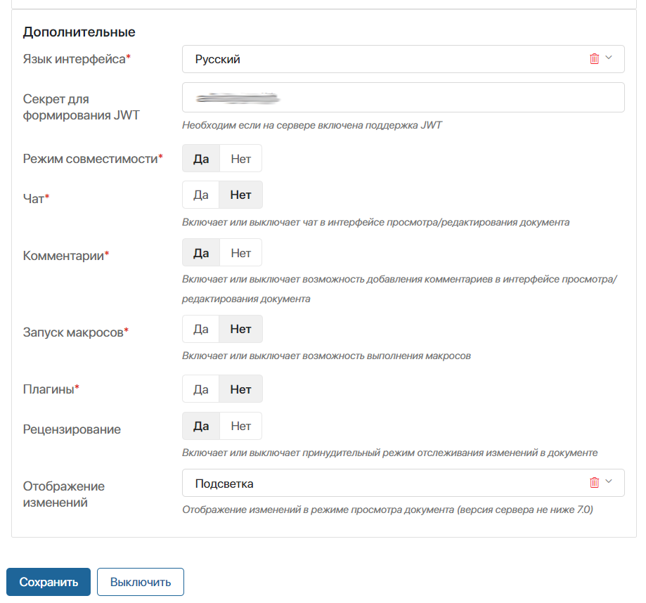
- Язык интерфейса* — укажите нужный язык интерфейса OnlyOffice. По умолчанию используется русская локализация;
- Секрет для формирования JWT — если на сервере ONLYOFFICE Docs включена поддержка JWT, укажите в этом поле секретный ключ. Его можно скопировать в конфигурационном файле
local.jsonв полеsecret; - Режим совместимости* — отметьте Да. Эта опция позволяет открывать редактирование документов (приложение типа Документ) на версиях от 0.9.х до 2021.6 включительно;
- Чат* — отключает возможности внутреннего чата OnlyOffice в режиме редактирования. Установите Нет. Это настройка относится именно к внутренней функции OnlyOffice;
- Комментарии* — опция включает и отключает возможности внутренних комментариев OnlyOffice в режиме редактирования. Установите Нет. Это настройка относится именно к внутренней функции OnlyOffice;
- Запуск макросов* — установите Да, чтобы включить выполнение макросов в документе;
- Плагины* — установите Да, чтобы включить поддержку плагинов OnlyOffice;
- Рецензирование — установите Да, чтобы при редактировании файла автоматически включался режим отслеживания изменений. Все изменения, внесённые в этом режиме, фиксируются как правки и выделяются цветом. Их можно принять или отклонить. Пользователи могут индивидуально включать и отключать отслеживание изменений при редактировании определённого документа на вкладке Совместная работа;
- Отображение изменений — выберите, как отображаются изменения, внесённые в документ в режиме рецензирования. Опция работает для ONLYOFFICE Docs версии 7.0 и выше:
- Подсветка — опция используется по умолчанию. Во время просмотра документа правки, добавленные в режиме отслеживания изменений, выделены цветом. При нажатии на отредактированный текст можно посмотреть автора, дату и детали исправлений. Все вносимые изменения отображаются для пользователя в реальном времени.
В режиме редактирования можно принять или отклонить правки, нажав на выделенный цветом текст;
- Не показывать — в режиме просмотра правки не видны, пока их не одобрят. Чтобы увидеть последние принятые правки, а также изменения, внесённые с отключённым рецензированием, нужно обновить страницу. Как только все пользователи заканчивают редактирование, и новая версия документа добавляется в систему, страница обновляется автоматически.
В режиме редактирования все ещё не принятые исправления выделены цветом. Их можно принять или отклонить, нажав на них;
- Показывать с изменениями — исправления, внесённые в режиме рецензирования, при просмотре документа отображаются без выделения, как если бы они уже были приняты. Если рецензирование отключено, в режиме просмотра можно увидеть изменение текста в моменте.
При редактировании документа правки, которые ещё не приняты, выделены цветом. Их можно принять или отклонить, нажав на них.
После заполнения полей сохраните настройки.
Использование OnlyOffice
Сервис OnlyOffice по умолчанию используется для просмотра и редактирования файлов на форме приложения типа Документ и в разделе Файлы.
Для работы с файлами в приложениях других типов разместите на их формах специальные виджеты.
OnlyOffice для работы в приложении типа «Документ»
В приложении типа Документ вы можете добавлять файл при создании элемента. После этого документ отобразится на форме с помощью OnlyOffice.
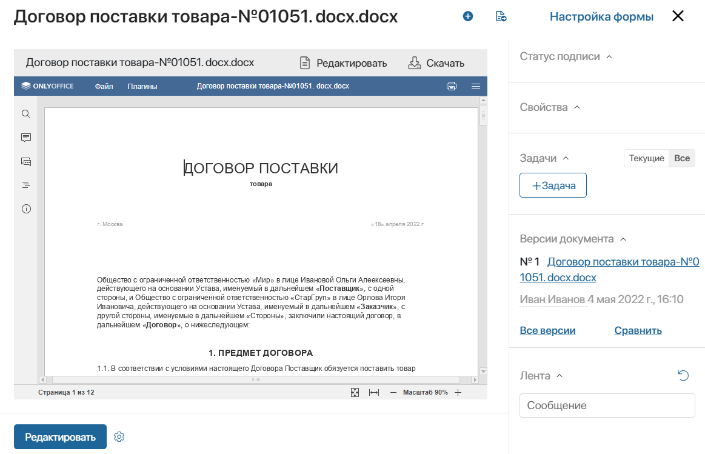
Внести правки в документ можно несколькими способами:
- перейдите на форму редактирования элемента приложения, нажав Редактировать в левом нижнем углу формы просмотра;
- откройте полноэкранный режим редактирования, нажав Редактировать на верхней панели формы просмотра.
По умолчанию в OnlyOffice включён режим быстрого редактирования. Все изменения сохраняются каждые несколько секунд. Если вы редактируете или просматриваете документ в то же время, когда другой пользователь его редактирует, вы увидите исправления сразу.
При необходимости вы можете выбрать другой режим совместной работы в настройках OnlyOffice или переключать режим для определённого документа.
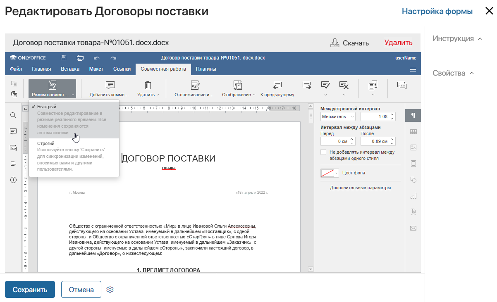
После того как все пользователи отредактировали документ, новая версия появится в системе в течение 5–10 секунд.
OnlyOffice для работы в разделе «Файлы»
В разделе Файлы при открытии документа предпросмотр происходит с помощью OnlyOffice.
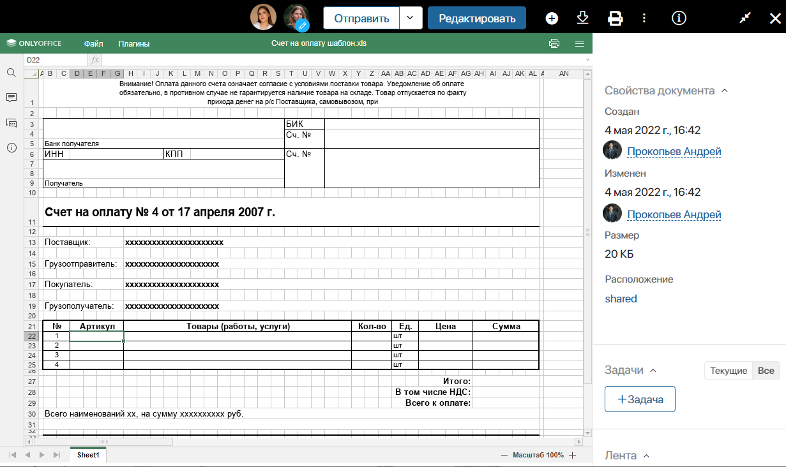
Чтобы перейти в режим редактирования и внести правки в документ, нажмите кнопку Редактировать на верхней панели страницы просмотра файла.
Возле аватара пользователя, который редактирует файл, отображается значок карандаша.
После внесения изменений можно:
- вернуться в режим просмотра, нажав на значок в правом верхнем углу окна;
- закрыть файл, нажав на крестик.
В систему будет добавлена новая версия файла, которая станет текущей.
Настройки для работы OnlyOffice в приложениях типа «Стандартное» и «Событие»
Для просмотра файлов на формах приложений типа Стандартное или Событие вы можете воспользоваться виджетом Просмотр файла.
Чтобы открывать файл на редактирование, разместите на форме приложения виджет Просмотр и редактирование файла в OnlyOffice. Для его настройки заполните поля:
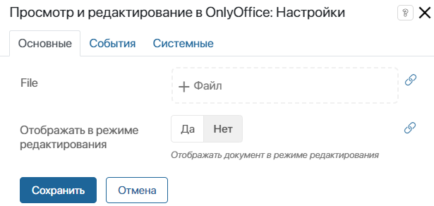
- File — нажмите на значок
 и выберите свойство типа Файлы из контекста приложения или бизнес‑процесса;
и выберите свойство типа Файлы из контекста приложения или бизнес‑процесса; - Отображать в режиме редактирования — выберите Да, чтобы после загрузки файл по умолчанию был открыт для внесения изменений.
Виджет Просмотр и редактирование файла в OnlyOffice доступен только после включения модуля интеграции с OnlyOffice. При отключении модуля на формах, где был размещён виджет, появится сообщение об ошибке.
Особенности редактирования документов в формате .pdf
Вы можете изменять .pdf-файлы в интерфейсе ELMA365.
Для этого администратор системы должен:
- настроить интеграцию с OnlyOffice версии 8.1 и выше;
- в настройках модуля включить поддержку формата .pdf.
Для редактирования выполните следующие действия:
- Откройте карточку с документом в приложении типа Документ или файл в разделе Файлы. Нажмите кнопку Редактировать.
- На панели инструментов нажмите Редактировать PDF, а затем Выделить.
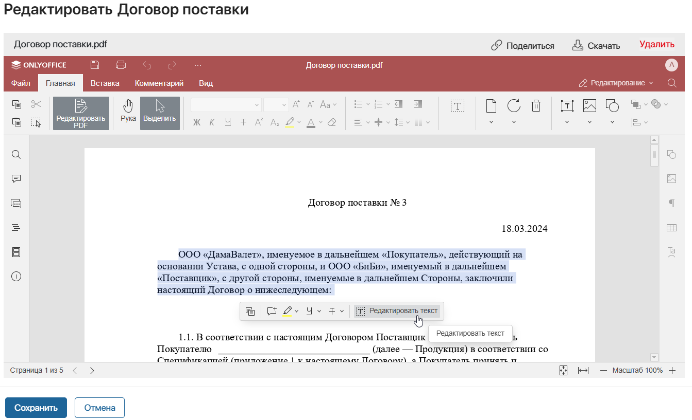
- Выделите фрагмент, который хотите скорректировать и в появившемся окне нажмите Редактировать текст.
- Внесите изменения и сохраните их, нажав на панели инструментов значок дискеты.
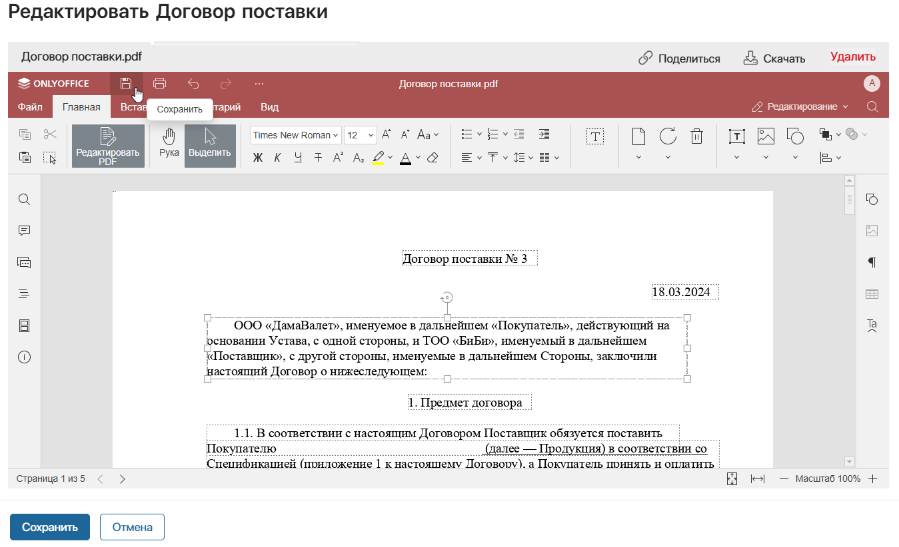
- Чтобы добавить отредактированную версию в ELMA365:
- на форме приложения типа Документ нажмите кнопку Сохранить;
- в разделе Файлы выйдите из режима редактирования файла.
Часто задаваемые вопросы
- У меня была предварительная версия и теперь я поставил новую. Как понять, где старая, а где новая?
URL до актуальной версии: /admin/extensions/ext_265d7b04-b8c1-45d3-8d28-4dcccf25672c.
- В браузере я вижу, что OnlyOffice работает по https, но в ELMA365 появляется ошибка Download failed.
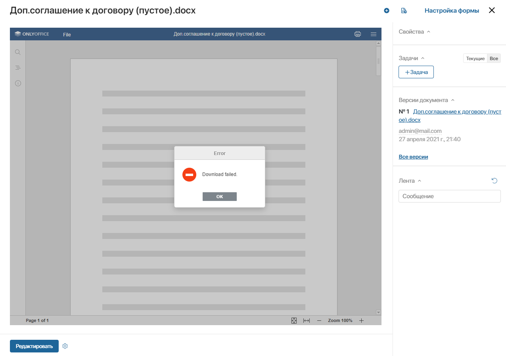
Если ваш путь сертификации DST Root CA x3 / R3 / Ваш_сервер, то вероятно причина в устаревании сертификата R3. Данная ошибка сертификата игнорируется в браузерах.
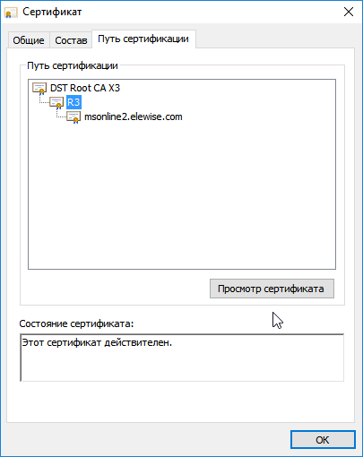
Убедиться в этом можно, воспользовавшись сервисом проверки SSL, например, www.ssllabs.com/ssltest/analyze.html.
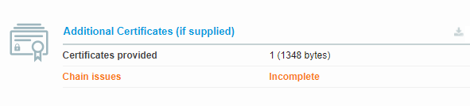
Для решения проблемы вам нужно использовать сертификат, где указан не только Ваш_сервер, но и путь сертификации. Обычно такой сертификат выдаётся сразу и в его названии написано +chain.